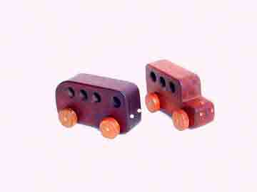

Timeless Wooden Toys
Since 1973
I started making wooden toys over 35 years ago for my first child,
combining my love of wood varieties and kids' appreciation for simple
toys that suggest no boundaries to creative play. I no longer make sets
of mahogany blocks, wooden swords, play cameras, finger tops, trapezes
and swings or travel tic-tac-toes, but I still love making my unique
Rosewood RacersTM, along with mahogany trucks and buses, and multi-track
marble raceways in cherry.
My famous "Rosewood RacersTM"
in beautiful woods from ash to zebrawood, with laminated maple or
walnut racing stripes, 9" long. Front: vermillion. Back, left to right:
zebrawood, walnut, maple, rosewood. $65, shipping included.

Highway bus, school bus.
Mahogany, 8" long. $40 ppd.
Log truck, stake truck. 10" long. Mahogany and birch. $50 ppd.
3-track marble raceway. Cherry, hand finished, 24" wide X 26" high. $250 ppd.
FAQs
What are your toys made of?
I use mostly hardwoods native to the northeast and midatlantic USA, including maple, walnut, cherry and birch. The exotic hardwoods in my Rosewood Racers were imported from the tropics two and three decades ago, before the environmental degradations caused by unsustainable practices were known. When I find tropical hardwood now, I try to learn its origin and history, but if it has not been imported recently, this is usually impossible to document.
What stains do you use?
None. The beauty of the woods is in their natural colors, and a clear finish shows it off best. Most woods will darken with exposure to indoor daylight, plus the patina of use. The beauty of maple, cherry and birch is usually enhanced by this natural mellowing, but such unusual woods as rosewood and padouk actually hide some of their striking color as the wood darkens. These can be restored to their original color by resurfacing and refinishing, but it must be done extremely carefully, and will only be temporary, until the wood darkens again... unless the car is kept in a box or other dark place.
Aren't these toys expensive?
Not more than any artisan-designed and-crafted item. Unlike any current must-have amusement -- especially electronic or battery-run -- not only will these not break or wear out, their sentimental value will increase exponentially as they are handed down from one generation to the next. Divide the price by 25 or 50 years' ownership, and see how inconsequential the price becomes!
This teak car has raced in Anchorage since 1978
Rafael's father played with this bus in the mid-1970s
How strong are these toys?
Very strong! Here are two comments:
John deC., an owner from the 1970s, reminded me of my claim that "Some companies stand behind their wares; I can stand ON mine," and Tassie H., a former child-owner and now a mother herself, can verify that she used to use two racers as roller skates, 25 years ago.
My current warranty is this: "Guaranteed for life under suitable driving conditions." About once per decade I get a Rosewood Racer back for repairs -- one for a broken axle, two that were flood-marred -- and I gladly reconditioned each one.
Is the finish safe for young children?
No toymaker can guarantee that a child or pet cannot injure or make himself sick by chewing on a toy. I use the "greenest" possible finishes I can find, so these toys are probably safer than most house furniture. I use only vegetable or baby oil on my trucks' removable logs and stakes, since these are small enough for oral exploration, but children mentally young enough to be at risk for swallowing non-food items shouldn't be allowed to play with these trucks, or the marbles in my marble raceways.
Are they available in any stores?
Soon, but I do not have the capacity to make these in sufficient quantities to supply more than a few stores.
My Rosewood Racers were juried by fellow artisans in wood in the League of New Hampshire Craftsmen, and are at times available in some League stores.